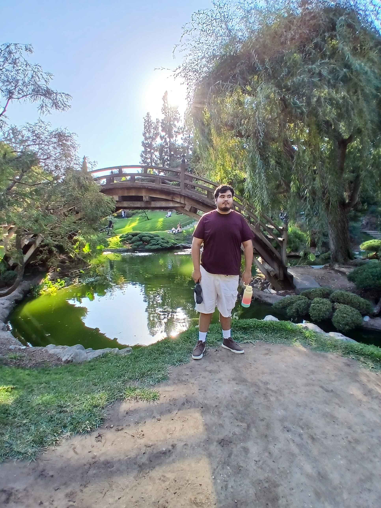

 Hi, my name Francisco Preciado. I am a Computer Science graduate with a strong foundation in software development, problem-solving, and technology-driven solutions. I am passionate about building efficient, innovative systems and have a particular interest in software engineering and game development. My hands-on experience includes coding, debugging, and collaborating on projects that highlight my ability to adapt, learn new technologies quickly, and deliver high-quality results. Throughout my academic and project experience, I have developed a solid understanding of programming languages, development frameworks, and software design principles. I thrive in collaborative environments, leveraging my strong communication and teamwork skills to solve complex challenges and drive projects to completion. I am always eager to explore new tools and methodologies to stay current with industry trends and improve my workflow. I am now seeking an opportunity in the tech industry where I can apply my technical expertise and creative problem-solving abilities to contribute to impactful projects. I aim to work in an environment that fosters growth, innovation, and continuous learning, allowing me to expand my skill set and make meaningful contributions as a developer. My ultimate goal is to play a key role in creating solutions that not only meet business objectives but also provide value to users and communities.